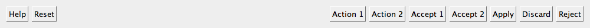

| Home · All Classes · Modules · QSS HELP · QSS 案例 · VER007 HOME |
该QDialogButtonBox类是一个小部件，呈现在布局是适合当前控件样式按钮。More...
继承QWidget。
该QDialogButtonBox类是一个小部件，呈现在布局是适合当前控件样式按钮。
在布局符合该平台的界面指南对话框和消息框通常存在按钮。不变的是，不同的平台有不同的布局他们的对话。 QDialogButtonBox允许开发人员添加按钮，并会自动使用适当的布局，为用户的桌面环境。
大多数按钮的对话框遵循一定的角色。这样的角色包括：
此外，还可以解僱这可能会导致破坏性的结果的对话框的替代方式。
大多数对话框有一个几乎可以被认为是标准的（比如按钮OK和Cancel按钮）。它有时是方便的，以一种标准的方式创建这些按钮。
有使用QDialogButtonBox的几种方法。其中一个方法是创建按钮（或按钮文本）自己并把它们添加到按钮盒，指定他们的角色。
findButton = new QPushButton(tr("&Find"));
findButton->setDefault(true);
moreButton = new QPushButton(tr("&More"));
moreButton->setCheckable(true);
moreButton->setAutoDefault(false);
buttonBox = new QDialogButtonBox(Qt.Vertical);
buttonBox->addButton(findButton, QDialogButtonBox.ActionRole);
buttonBox->addButton(moreButton, QDialogButtonBox.ActionRole);
另外， QDialogButtonBox提供了几个标准按钮（例如确定，取消，保存），您可以使用。他们共同存在的标志使你可以或它们的构造函数。
buttonBox = new QDialogButtonBox(QDialogButtonBox.Ok
| QDialogButtonBox.Cancel);
connect(buttonBox, SIGNAL(accepted()), this, SLOT(accept()));
connect(buttonBox, SIGNAL(rejected()), this, SLOT(reject()));
你可以混合和匹配正常的按钮和标准按钮。
目前的按钮被布置在下面的方式，如果该按钮框是水平的：
 |
Button box laid out in horizontal GnomeLayout |
|  | Button box laid out in horizontal KdeLayout |
 |
Button box laid out in horizontal MacLayout |
| Button box laid out in horizontal WinLayout |
这些按钮的布局方式如下，如果按钮盒是垂直的：
| GnomeLayout | KdeLayout | MacLayout | WinLayout |
 |
 |
 |
此外，按钮盒仅包含有按钮ActionRole or HelpRole可以考虑无模式，并有备用看看Mac OS X上：
| modeless horizontal MacLayout |  |
当单击该按钮中的按钮时，clicked（）信号被发射的实际按钮被按下。为方便起见，如果按钮有AcceptRole，RejectRole或HelpRole时，accepted（ ）rejected（） ，或helpRequested（）信号被分别发射。
如果你想要一个特定的按钮被默认你需要调用QPushButton.setDefault（ ）就可以了你自己。但是，如果没有默认按钮设置，并保存在使用哪个按钮是默认按钮跨平台的QPushButton.autoDefault物业，第一按钮与接受角色成为默认按钮QDialogButtonBox显示时，
该枚举描述配置中包含的按钮中的按钮时所要使用的布局策略。
| Constant | Value | Description |
|---|---|---|
| QDialogButtonBox.WinLayout | 0 | 使用原则适用于在Windows应用程序。 |
| QDialogButtonBox.MacLayout | 1 | 使用策略适用于Mac OS X上的应用 |
| QDialogButtonBox.KdeLayout | 2 | 使用策略适合在KDE应用程序。 |
| QDialogButtonBox.GnomeLayout | 3 | 使用策略适合在GNOME应用程序。 |
按键布局由指定的current style。然而， X11的平台上，也可以通过在桌面环境的影响。
该枚举描述了可用于描述按键在按钮框的作用。这些角色的组合作为标志用来形容他们的行为的不同方面。
| Constant | Value | Description |
|---|---|---|
| QDialogButtonBox.InvalidRole | -1 | 该按钮是无效的。 |
| QDialogButtonBox.AcceptRole | 0 | 单击该按钮被接受的对话框（如确定）。 |
| QDialogButtonBox.RejectRole | 1 | 单击该按钮会导致被拒绝的对话框（例如取消） 。 |
| QDialogButtonBox.DestructiveRole | 2 | 单击该按钮会导致破坏性的变化（例如，用于舍弃变更） ，然后关闭对话框。 |
| QDialogButtonBox.ActionRole | 3 | 单击该按钮使更改对话框中的元素。 |
| QDialogButtonBox.HelpRole | 4 | 该按钮可点击，请求帮助。 |
| QDialogButtonBox.YesRole | 5 | 该按钮是一个“是”形按钮。 |
| QDialogButtonBox.NoRole | 6 | 该按钮是一个“无”形按钮。 |
| QDialogButtonBox.ApplyRole | 8 | 按钮适用电流的变化。 |
| QDialogButtonBox.ResetRole | 7 | 按钮重置对话框的字段默认值。 |
See also StandardButton。
这些枚举描述了标准按钮标志。每个按钮都有一个定义ButtonRole。
| Constant | Value | Description |
|---|---|---|
| QDialogButtonBox.Ok | 0x00000400 | 与定义的一个“OK”按钮AcceptRole。 |
| QDialogButtonBox.Open | 0x00002000 | 与定义的“打开”按钮AcceptRole。 |
| QDialogButtonBox.Save | 0x00000800 | 与定义的“保存”按钮AcceptRole。 |
| QDialogButtonBox.Cancel | 0x00400000 | “取消”的按钮定义RejectRole。 |
| QDialogButtonBox.Close | 0x00200000 | 与定义的“关闭”按钮RejectRole。 |
| QDialogButtonBox.Discard | 0x00800000 | A“放弃”或“不保存”按钮，根据不同的平台上，与定义DestructiveRole。 |
| QDialogButtonBox.Apply | 0x02000000 | 一个“应用”的定义的按钮ApplyRole。 |
| QDialogButtonBox.Reset | 0x04000000 | “复位”的定义的按钮ResetRole。 |
| QDialogButtonBox.RestoreDefaults | 0x08000000 | A“还原为默认值”的定义的按钮ResetRole。 |
| QDialogButtonBox.Help | 0x01000000 | 与定义的“帮助”按钮HelpRole。 |
| QDialogButtonBox.SaveAll | 0x00001000 | 与定义的“全部保存”按钮AcceptRole。 |
| QDialogButtonBox.Yes | 0x00004000 | 与定义的“Yes”按钮YesRole。 |
| QDialogButtonBox.YesToAll | 0x00008000 | 与定义的“全是”按钮YesRole。 |
| QDialogButtonBox.No | 0x00010000 | 与定义的“否”按钮NoRole。 |
| QDialogButtonBox.NoToAll | 0x00020000 | 与定义的“全否”按钮NoRole。 |
| QDialogButtonBox.Abort | 0x00040000 | 与定义的“中止”按钮RejectRole。 |
| QDialogButtonBox.Retry | 0x00080000 | 与定义的“重试”按钮AcceptRole。 |
| QDialogButtonBox.Ignore | 0x00100000 | 一个“忽略”的定义的按钮AcceptRole。 |
| QDialogButtonBox.NoButton | 0x00000000 | 无效的按钮。 |
该StandardButtons类型是一个typedef为QFlags\u003cStandardButton\u003e 。它存储StandardButton值的或组合。
See also ButtonRole和standardButtons。
该parent的说法，如果不是没有，原因self通过Qt的，而不是PyQt的拥有。
构造一个空，水平按钮盒给定的parent。
See also orientation和addButton（ ） 。
该parent的说法，如果不是没有，原因self通过Qt的，而不是PyQt的拥有。
构造一个空按钮盒给定的orientation和parent。
See also orientation和addButton（ ） 。
该parent的说法，如果不是没有，原因self通过Qt的，而不是PyQt的拥有。
构造一个按钮盒给定的orientation和parent，包含由指定的标准按钮buttons。
See also orientation和addButton（ ） 。
该button说法有它的所有权转移给Qt的。
将给定button与指定的按钮盒role。如果该角色是无效的，不添加该按钮。
如果按钮已经被添加，它被删除，并以新的角色再次添加。
Note:按钮盒采用按钮的所有权。
See also removeButton（）和clear（ ） 。
创建一个按钮与给定的text，将其添加到该按钮框对指定role，并返回相应的按钮。如果role是无效的，则不会创建按钮，则返回0。
See also removeButton（）和clear（ ） 。
增加了一个标准button在按钮框，如果它是有效的话，并返回一个按钮。如果button是无效的，它不被添加到该按钮的框，并返回0。
See also removeButton（）和clear（ ） 。
返回QPushButton对应于标准按钮which，或者0，如果标准按钮不能在这个按钮盒存在。
See also standardButton（ ）standardButtons（）和buttons（ ） 。
返回指定按钮的作用button。这个函数返回InvalidRole如果button是0或未被添加到按钮框。
See also buttons（）和addButton（ ） 。
返回所有已被添加到按钮中的按钮的列表。
See also buttonRole（ ）addButton（）和removeButton（ ） 。
从重新实现QWidget.changeEvent（ ） 。
清除按钮盒，删除其中的所有按钮。
See also removeButton（）和addButton（ ） 。
从重新实现QObject.event（ ） 。
该button争论
移除button从而不删除它，并设置其父零按钮盒。
See also clear（ ）buttons（）和addButton（ ） 。
返回对应于给定的标准按钮枚举值button或NoButton如果给定的button不是一个标准的按钮。
See also button（ ）buttons（）和standardButtons（ ） 。
这是该信号的默认超载。
按钮盒内部的按钮被点击时，只要它被定义与这个信号被发射AcceptRole or YesRole。
See also rejected（ ）clicked（）和helpRequested（ ） 。
这是该信号的默认超载。
单击该按钮盒内的按钮时，这个信号被发射。被指定的被按下的特定键button。
See also accepted（ ）rejected（）和helpRequested（ ） 。
这是该信号的默认超载。
按钮盒内部的按钮被点击时，只要它被定义与这个信号被发射HelpRole。
See also accepted（ ）rejected（）和clicked（ ） 。
这是该信号的默认超载。
按钮盒内部的按钮被点击时，只要它被定义与这个信号被发射RejectRole or NoRole。
See also accepted（ ）helpRequested（）和clicked（ ） 。
| PyQt 4.10.3 for X11 | Copyright © Riverbank Computing Ltd and Nokia 2012 | Qt 4.8.5 |